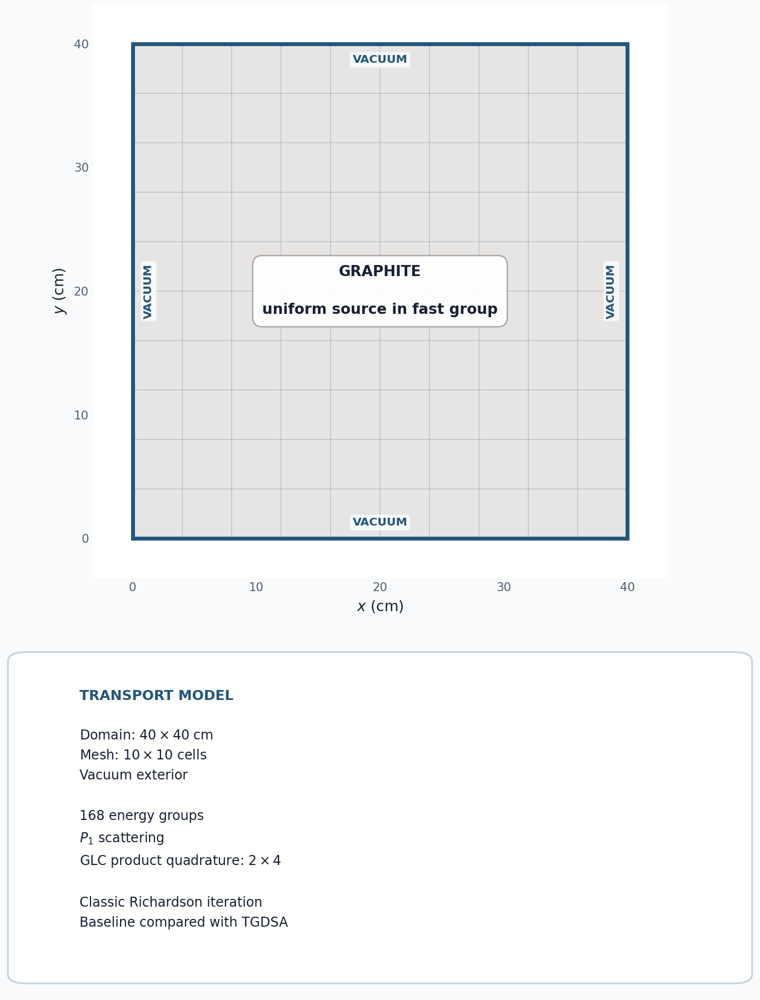
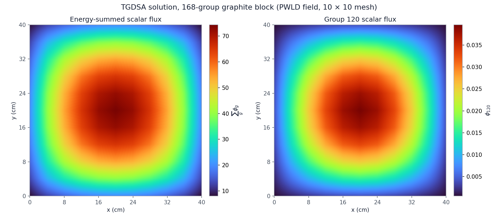

5.3.1. TGDSA: Two-Grid Diffusion Synthetic Acceleration

This tutorial adds two-grid diffusion synthetic acceleration (TGDSA) to a multigroup graphite calculation. Two otherwise identical solves show that TGDSA changes the convergence process without changing the transport solution.
5.3.1.1. Graphite problem
A uniform fast source is applied to a 40 cm by 40 cm graphite block with vacuum boundaries. The 168-group graphite cross sections come from test/assets/xs/xs_graphite_pure.xs, which is also used by the OpenSn regression suite. The file contains higher-order scattering data; this compact example retains the first two Legendre moments (\(P_1\)).
All 168 groups are placed in one groupset. The baseline uses ordinary Richardson source iteration with no acceleration. The second run changes only apply_tgdsa, so it uses TGDSA without WGDSA or another transport accelerator. TGDSA collapses the multigroup error to a one-group diffusion problem and projects the correction back to every group.
[ ]:
from pathlib import Path
from mpi4py import MPI
from pyopensn.aquad import GLCProductQuadrature2DXY
from pyopensn.context import Finalize
from pyopensn.mesh import KBAGraphPartitioner, OrthogonalMeshGenerator
from pyopensn.post import VolumePostprocessor
from pyopensn.solver import DiscreteOrdinatesProblem, SteadyStateSourceSolver
from pyopensn.source import VolumetricSource
from pyopensn.xs import MultiGroupXS
comm = MPI.COMM_WORLD
rank = comm.rank
tutorial_dir = Path(__file__).resolve().parent if "__file__" in globals() else Path.cwd()
repo_root = next(
path for path in (tutorial_dir, *tutorial_dir.parents)
if (path / "test/assets/xs").is_dir()
)
5.3.1.2. Build and solve both cases
The 10 by 10 mesh uses a 2 by 2 KBA partition, so run the generated script with four MPI processes. Both cases use the same classic Richardson source iteration and convergence tolerance. The Boolean argument controls only apply_tgdsa.
[ ]:
def solve(use_tgdsa):
comm.Barrier()
start = MPI.Wtime()
nodes = [4.0 * i for i in range(11)]
partitioner = KBAGraphPartitioner(
nx=2, ny=2, xcuts=[20.0], ycuts=[20.0]
)
mesh = OrthogonalMeshGenerator(
node_sets=[nodes, nodes], partitioner=partitioner
).Execute()
mesh.SetOrthogonalBoundaries()
mesh.SetUniformBlockID(0)
graphite_xs = MultiGroupXS()
graphite_xs.LoadFromOpenSn(
str(repo_root / "test/assets/xs/xs_graphite_pure.xs")
)
num_groups = graphite_xs.num_groups
source_strength = [0.0] * num_groups
source_strength[0] = 1.0
quadrature = GLCProductQuadrature2DXY(
n_polar=2, n_azimuthal=4, scattering_order=1
)
groupset = {
"groups_from_to": (0, num_groups - 1),
"angular_quadrature": quadrature,
"inner_linear_method": "classic_richardson",
"l_abs_tol": 1.0e-8,
"l_max_its": 1200,
}
if use_tgdsa:
groupset.update(
{
"apply_tgdsa": True,
"tgdsa_l_abs_tol": 1.0e-8,
"tgdsa_l_max_its": 200,
"tgdsa_solver_policy": "auto",
}
)
problem = DiscreteOrdinatesProblem(
mesh=mesh,
num_groups=num_groups,
groupsets=[groupset],
xs_map=[{"block_ids": [0], "xs": graphite_xs}],
volumetric_sources=[
VolumetricSource(block_ids=[0], group_strength=source_strength)
],
boundary_conditions=[
{"name": name, "type": "vacuum"}
for name in ("xmin", "xmax", "ymin", "ymax")
],
options={"verbose_inner_iterations": False},
)
solver = SteadyStateSourceSolver(problem=problem)
comm.Barrier()
model_done = MPI.Wtime()
solver.Initialize()
comm.Barrier()
init_done = MPI.Wtime()
solver.Execute()
comm.Barrier()
end = MPI.Wtime()
times = [
comm.allreduce(t, op=MPI.MAX)
for t in (model_done - start, init_done - model_done, end - init_done)
]
average = VolumePostprocessor(problem=problem, value_type="avg")
average.Execute()
group_flux = average.GetValue()[0]
return problem, sum(group_flux), group_flux[120], solver.GetNumSweeps(), times
_, unaccelerated_total, unaccelerated_g120, unaccelerated_sweeps, unaccelerated_times = (
solve(False)
)
tgdsa_problem, tgdsa_total, tgdsa_g120, tgdsa_sweeps, tgdsa_times = solve(True)
5.3.1.3. Compare the solutions
The primary correctness metric is the relative difference in the energy-summed, volume-averaged scalar flux. Group 120 provides a second multigroup check. Transport sweeps verify that TGDSA reduces high-order work. Wall time is split into three phases, each the maximum across ranks: model setup (mesh, 168-group cross sections, transport problem, and solver), solver initialization, and the source iterations themselves. Separating the phases isolates the cost and benefit of TGDSA from the setup both cases share. Timing is illustrative rather than a regression metric because it depends on the machine.
[ ]:
total_relative_difference = (
abs(tgdsa_total - unaccelerated_total) / abs(unaccelerated_total)
)
g120_relative_difference = (
abs(tgdsa_g120 - unaccelerated_g120) / abs(unaccelerated_g120)
)
iteration_speedup = unaccelerated_times[2] / tgdsa_times[2]
total_speedup = sum(unaccelerated_times) / sum(tgdsa_times)
if rank == 0:
print(f"Unaccelerated total average flux={unaccelerated_total:.12e}")
print(f"TGDSA total average flux={tgdsa_total:.12e}")
print(f"TGDSA total flux relative difference={total_relative_difference:.12e}")
print(f"TGDSA group 120 relative difference={g120_relative_difference:.12e}")
print(f"Unaccelerated transport sweeps={unaccelerated_sweeps}")
print(f"TGDSA transport sweeps={tgdsa_sweeps}")
for name, times, sweeps in (
("Unaccelerated", unaccelerated_times, unaccelerated_sweeps),
("TGDSA", tgdsa_times, tgdsa_sweeps),
):
print(f"{name} model setup time (s)={times[0]:.6f}")
print(f"{name} solver initialization time (s)={times[1]:.6f}")
print(f"{name} iteration time (s)={times[2]:.6f}")
print(f"{name} total wall time (s)={sum(times):.6f}")
print(f"{name} time per sweep (s)={times[2] / sweeps:.6f}")
print(f"TGDSA iteration speedup={iteration_speedup:.6f}")
print(f"TGDSA total speedup={total_speedup:.6f}")
assert total_relative_difference < 1.0e-6
assert g120_relative_difference < 1.0e-6
assert tgdsa_sweeps < unaccelerated_sweeps
A representative four-process run gives the following solution comparison:
Solve |
Energy-summed average flux |
Group-120 average flux |
|---|---|---|
No acceleration |
42.31957467 |
\(1.7956985\times10^{-2}\) |
TGDSA |
42.31957469 |
\(1.7956985\times10^{-2}\) |
The converged total fluxes agree to about \(3.5\times10^{-10}\) relative error. The transport sweeps, taken directly from solver.GetNumSweeps(), measure the convergence work:
Solve |
Transport sweeps |
|---|---|
No acceleration |
1010 |
TGDSA |
459 |
The wall-time breakdown below is the median of five four-process runs:
Solve |
Model setup (s) |
Solver initialization (s) |
Source iterations (s) |
Total (s) |
Time per sweep (ms) |
|---|---|---|---|---|---|
No acceleration |
0.022 |
<0.001 |
7.966 |
7.988 |
7.9 |
TGDSA |
0.063 |
<0.001 |
4.141 |
4.204 |
9.0 |
Setup is small: building the mesh, loading the 168-group cross sections, and constructing the problem take about 0.02 s without acceleration, under 1% of the total. TGDSA’s model setup is about 0.04 s longer, about 1.5% of its total, because the problem computes the two-grid energy spectrum and builds the one-group diffusion operator when it is constructed. Nearly all the time is in the source iterations, so the wall-time comparison measures the acceleration directly.
TGDSA reduces transport sweeps by about 55%. Its one-group diffusion correction adds only about 1.1 ms to each sweep (about 14%), or roughly 0.52 s over the whole solve. The resulting speedup is 1.93 for the iterations and 1.91 overall, close to the 2.2-fold reduction in sweeps. Exact sweep counts can differ by one with floating-point ordering, and wall time is machine-dependent.
5.3.1.4. Export and visualize the scalar flux
The two solutions agree, so the TGDSA result is used as the representative flux field. The following code exports the 168 group scalar fluxes to VTK. It remains in Markdown so regression tests do not create output files.
from pyopensn.fieldfunc import FieldFunctionGridBased
FieldFunctionGridBased.ExportMultipleToPVTU(
tgdsa_problem.GetScalarFluxFieldFunction(), "Flux/TGDSA_Flux"
)

Scalar flux from the TGDSA solve: the sum over all 168 groups (left) and group 120 (right). Each 4 cm cell is drawn with its piecewise-linear discontinuous (PWLD) solution, the bilinear field defined by the cell’s four nodal values. The uniform source and vacuum boundaries give a symmetric distribution that peaks at the center of the block.
5.3.1.5. Finalize (for Jupyter Notebook only)
In script mode, PyOpenSn handles finalization automatically. In a Jupyter kernel, finalize OpenSn before MPI.
[ ]:
if "opensn_console" not in globals():
from IPython import get_ipython
if get_ipython() is not None:
Finalize()
MPI.Finalize()